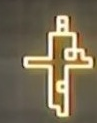
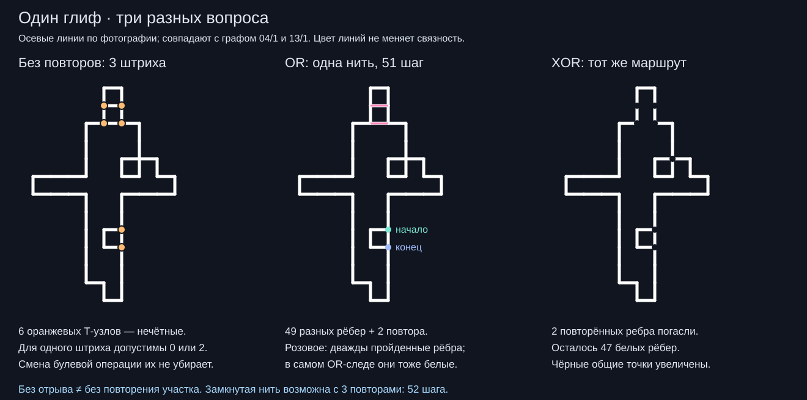

← Развёртки 19 кадров · Опыт с XOR-нитью
13 ноября 2026 · 0.001 · исследовательский разбор
Для белого следа — OR.
Для единого прохода — маршрут.

Чтобы получить такой белый рисунок нитью и сохранить белое в местах повторного наложения, подходит OR: хотя бы один проход оставляет белое. AND двух следов оставляет только их общую часть; XOR гасит совпадения. Здесь белое кодируется единицей.
Одной непрерывной нитью — да, с двумя короткими повторами. По каждому участку строго один раз — нет. Это вывод для показанной ниже осевой схемы, которая совпадает с ранее восстановленными графами 04/1 и 13/1. В ней 49 единичных рёбер, одна компонента и шесть Т-образных узлов. При всех трёх прежних порогах выделения в этих двух наблюдениях также шесть нечётных узлов. Это согласованность оцифровок, а не доказательство устройства исходной анимации.

Почему нужны повторы
Через внутреннюю точку нить приходит и уходит: ветви расходуются парами. Непарная ветвь может остаться только у начала и конца. Здесь таких точек шесть, поэтому без повторов нужны минимум 6 / 2 = 3 отдельных штриха.
Если дважды пройти две короткие горизонтальные перекладины сверху, четыре нечётных узла станут чётными. Оставшиеся два, у нижней маленькой петли, станут началом и концом. Получится один непрерывный маршрут: 49 разных рёбер + 2 повторных = 51 шаг. Новых соединений мы не дорисовываем. Это минимальное число повторных единичных рёбер: каждый повтор меняет чётность максимум у двух узлов, а исправить нужно четыре. Замкнутой нити нужны три повтора и 52 шага; третий повтор идёт по общей вертикальной стороне нижней петли.
При OR все 49 рёбер останутся белыми. При XOR те же два повторённых ребра исчезнут: останется 47 белых рёбер, а некоторые многократно посещённые точки также погаснут. Поэтому одна непрерывная нить и её видимый след — разные объекты.
Какие есть булевы операции
Пусть A и B — два готовых чёрно-белых следа, где 1 означает белое. Операция применяется к каждой точке двух следов.
| A | B | OR | AND | XOR | NOR | NAND | XNOR |
|---|---|---|---|---|---|---|---|
| 0 | 0 | 0 | 0 | 0 | 1 | 1 | 1 |
| 0 | 1 | 1 | 0 | 1 | 0 | 1 | 0 |
| 1 | 0 | 1 | 0 | 1 | 0 | 1 | 0 |
| 1 | 1 | 1 | 1 | 0 | 0 | 0 | 1 |
OR — объединение; AND — пересечение; XOR — только несовпадающие части. NOR, NAND, XNOR инвертируют соответственно OR, AND, XOR, поэтому делают белым и фон, где оба исходных следа чёрные. NOT инвертирует один след. Всего функций двух булевых аргументов 16: четыре входные комбинации, у каждой два возможных ответа, то есть 2⁴. Сюда входят также константы, выбор одного аргумента, его отрицание и импликации.
Почему AND не дорисует нить
Если обновлять пустое чёрное поле по правилу M ← M AND S, оно останется чёрным: 0 AND S = 0. Если начать с белого поля, последовательные операции AND оставят только общую часть всех наложенных масок. Для накопления белой нити на чёрном поле подходит M ← M OR S.
Две специально построенные маски можно пересечь через AND и получить сложный глиф. Это отдельная задача выбора двух исходных фигур. Она не означает, что сам итоговый глиф удаётся обвести без повторения участков. При обратном кодировании цветов, где чёрное = 1, роли AND и OR меняются по законам де Моргана; здесь везде принято белое = 1.
Чёрные точки на схеме увеличены, хотя в модели они идеальные. Жёлто-красное свечение исходной съёмки не входит в граф. Вывод не устанавливает, какой операцией автор видео действительно получил глиф.
Схема SVG · Оба непрерывных маршрута и проверки · Воспроизводимый расчёт · Архив исследования

Воспроизведение: node boolean-thread.cjs. Проверяются непрерывность, наличие всех 49 рёбер, отсутствие новых геометрических рёбер, ровно два повторённых ребра, открытый маршрут из 51 шага, замкнутый из 52 и совпадение схемы с двумя прежними наблюдениями.